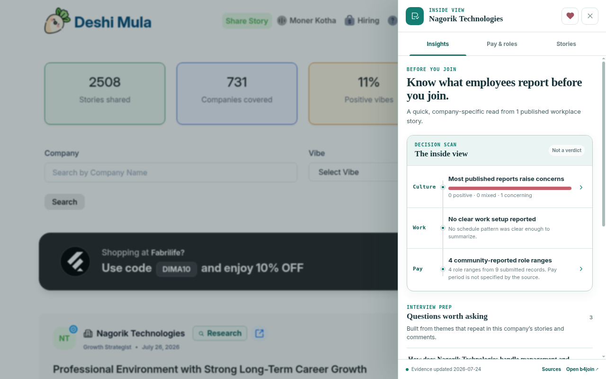
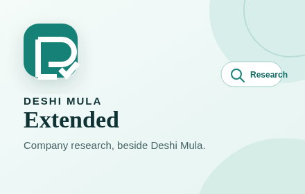

Company brief
See the patterns before you make the move.
Scan workplace culture, reported work setup, and pay evidence in one readable view.
Follow citations back to Deshi Mula stories, comments, jobs, and official company pages.
Built for Deshi Mula
Research company culture, reported pay, open roles, and workplace stories without leaving Deshi Mula.

Turn a company entry into a focused research brief with community evidence and official links.
Company brief
Scan workplace culture, reported work setup, and pay evidence in one readable view.
Follow citations back to Deshi Mula stories, comments, jobs, and official company pages.
Get a generated answer grounded in retrieved story excerpts, with citations attached.
Review salary evidence, active hiring signals, and careers links without treating community reports as official policy.
The extension needs no account and keeps its interface out of your way.
Choose a company entry and open its research panel beside the page.
Compare themes, pay, roles, and stories. Open the source when context matters.
Designed for careful decisions
Community stories can reveal patterns, but they are not verified company policy. The interface keeps source type and dates visible.
Read the privacy policy
No. It runs only on deshimula.com and adds research beside company entries found there.
No. There is no account, setup screen, or API key to configure.
No. Workplace stories are community-submitted. Verify important claims independently before making an employment decision.
Locally, it stores only whether you accepted the disclosure shown before your first Ask request.
Before the next application